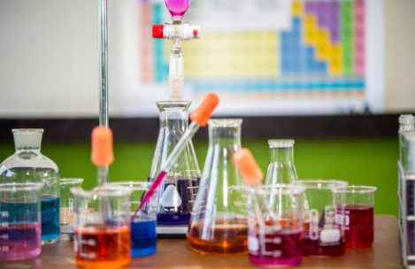
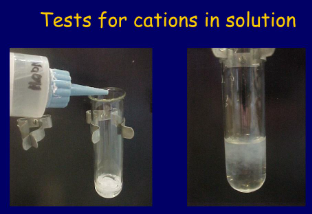
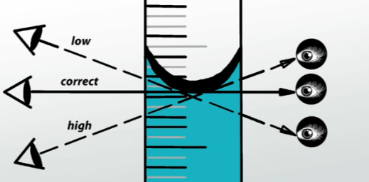
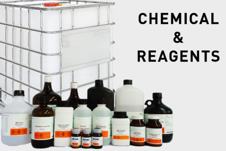
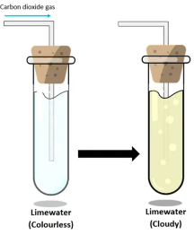
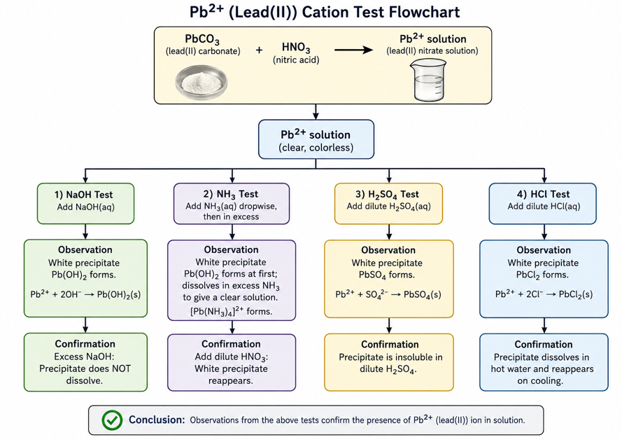

WAEC practical class for OLevel
WAEC Chemistry Practical Tutorial Portal
Learn. Know. Do. Create success.
Chemistry practical mastery, organized like a real exam room.
Move from theory to diagrams, titration calculations, qualitative observations, and full WAEC-style tests with marking schemes.

 Quantitative Analysis
Quantitative Analysis
Titration, titres and calculation flow
Open module
Qualitative AnalysisObservation, inference and ion confirmation
Open module
Exam ToolkitAccuracy rules, apparatus and diagrams
Open toolkitTitration masterclass
Quantitative Analysis
Average only concordant titres. Keep rough titre out of your calculation.
Salt analysis class
Qualitative Analysis
| Test | Observation | Inference |
|---|---|---|
| Carbonate + acid | Effervescence; lime water turns milky | CO2 from carbonate |
| NH4+ + NaOH + warm | Pungent gas turns red litmus blue | Ammonia evolved |
| Cu2+ + excess NH3 | Deep blue solution | Copper(II) confirmed |
Exam simulation
Practice Tests
Practical survival kit
Toolkit
Burette reading
Read the bottom of the meniscus at eye level and record to two decimal places.

Filtration
Label filter funnel, filter paper, residue and filtrate clearly in diagrams.

Reagents
Know what NaOH, NH3, AgNO3, BaCl2, acids and indicators are used to test.
Titration setup
Identify the burette, clamp, retort stand, conical flask, indicator and white tile.

CO2 gas test
Carbon dioxide from carbonate turns lime water milky during confirmation.

Lead(II) test flow
Use the flow diagram to connect observations with correct ion inferences.